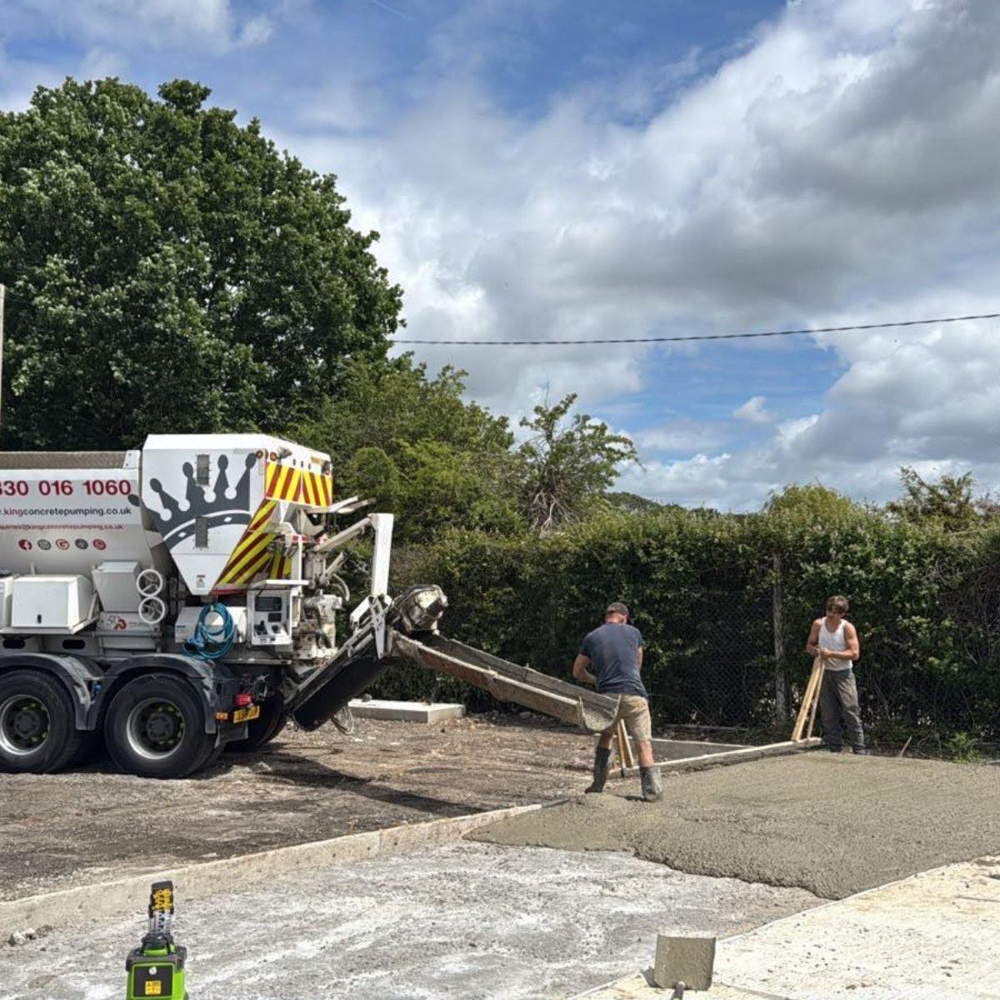
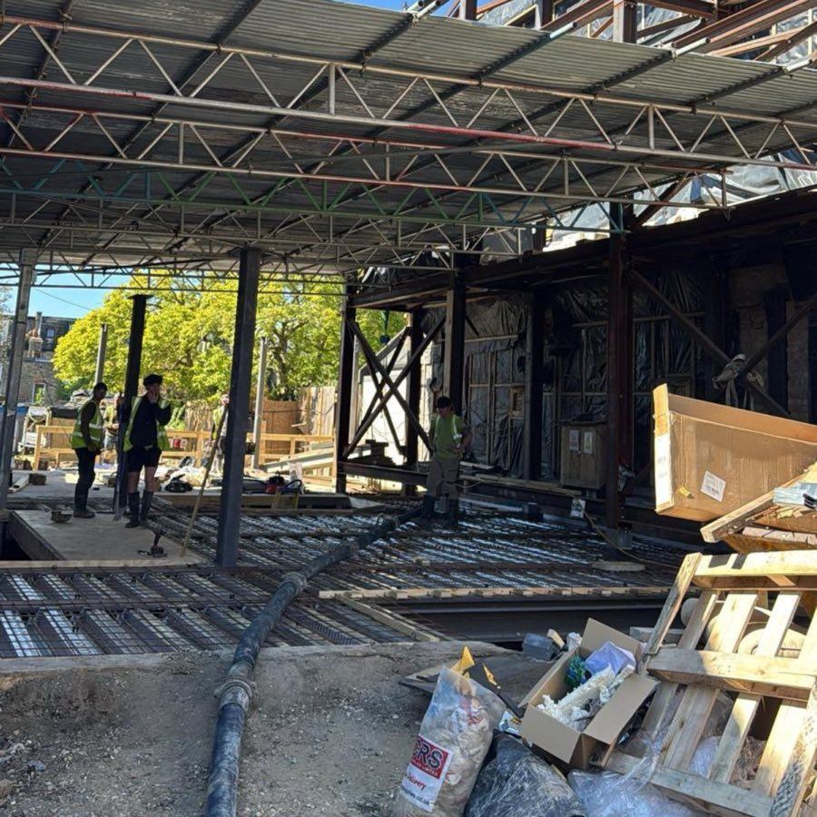
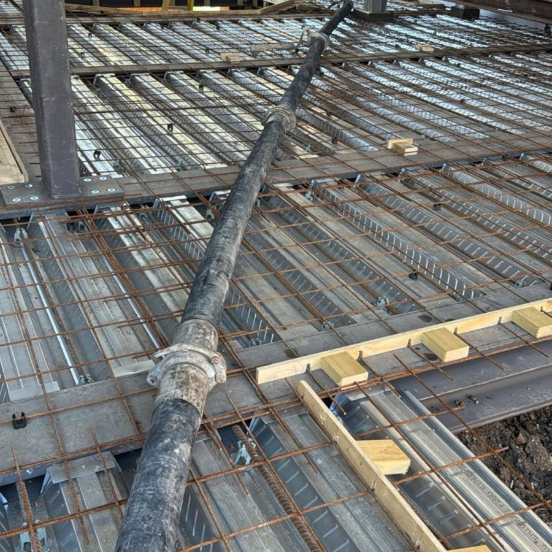

Underfloor Heating
Flows around heating pipes with no voids, protecting the pipework and spreading warmth evenly across the whole floor.
Read More
Family-Run Screed & Concrete Specialists
Fast, self-levelling flow screed, pumped precisely where it is needed. Perfect for underfloor heating, new builds and renovations across Surrey, Kent, Sussex and South London. Family run, fully trained, and ready when your site is.

About Liquid Screed
Liquid screed is the essential layer between your concrete sub-base and your floor finish. Poured as a flowing liquid, it spreads into every corner and self-levels to a smooth, flat surface, ready for tiles, wood, vinyl or carpet to sit correctly and last longer.
As a family-run team with decades of experience, we supply and pump liquid screed for homeowners, builders, flooring contractors and developers across the South East. Every mix is produced to the correct specification for your project, whether it is a new build, a renovation or a large commercial floor.
How We Work
We check levels, access and the floor build-up so the right screed and depth arrive ready for your project.
Liquid screed is pumped quickly and accurately across the floor, flowing into every corner with no gaps.
It self-levels to a smooth, flat surface, ready for your chosen floor finish once fully cured.
Applications
Flows around heating pipes with no voids, protecting the pipework and spreading warmth evenly across the whole floor.
Read More
A fast, level base for tiles, wood, vinyl or carpet across new builds, extensions and refurbishments.
Read More
Large, consistent floor areas placed quickly with our pumping equipment to keep sites on programme.
Read MoreWhy Liquid Screed
Flows into place and levels itself, giving a smooth, flat surface with none of the hard work of hand-laid screed.
Large floor areas can be poured in a fraction of the time of traditional screed, keeping your build on schedule.
Wraps around heating pipes with no gaps, for efficient, even heat across the whole floor.
A continuous pour means fewer joints and a lower risk of cracking than a traditional sand and cement screed.
The right mix and depth for anything from a single room to a full warehouse or industrial floor.
Clear, honest pricing and expert advice before you commit, with no surprises down the line.
Areas We Cover
We supply and deliver liquid screed right across the South East. Day to day you will find our pumps on new builds, extensions and commercial sites throughout Surrey, Kent, Sussex and South London.
Wherever your project sits, our team will make sure your screed arrives on time and to the correct specification. If you are just outside these areas, call us and we will happily let you know whether we can reach you.
Testimonials
Exceptional!!!! Efficient and effective service is just what you need in our industry and these guys turned up! Was fluid chatting to Dan who was very helpful & responsive on phone, and email by prompting reminders via text who scheduled the work. Overall, their service was top-notch and I would highly recommend them.
The New Owner is superb. Very professional, very efficient & exceptional customer service. Blakey on the lorry was on time, very helpful, and cleaned up afterwards. Truly top notch from start to finish, recommended by me & very competitively priced.
Amazing job from King Concrete. First class service and extremely professional. Blakey and Martin were unbelievably good. Excellent job.
FAQs
A few of the things customers ask us most about liquid screed. If your question is not here, just pick up the phone.
Liquid screed, also known as flowing or self-levelling screed, is a pumped screed that flows into place and levels itself, creating a smooth, flat surface ready for your floor finish. It goes down faster than traditional sand and cement screed and is ideal for underfloor heating.
Yes. Liquid screed flows around underfloor heating pipes with no gaps, protecting the pipework and transferring heat efficiently across the floor. That makes it one of the best options for new builds and renovations that include underfloor heating.
As a guide, most liquid screed will take light foot traffic within 24 to 48 hours. Full drying before floor coverings takes longer and depends on the depth, temperature and ventilation, so we will advise the right timings for your project.
Yes. Our specialist pumping equipment places screed quickly and accurately, even on larger sites or where access is tight. This reduces manual handling, gives a consistent finish across large floors and keeps the job on schedule.
We supply and deliver liquid screed across Surrey, Kent, Sussex and South London. If your project is just outside these areas, give us a call and we will let you know if we can reach you.
We do. From a single room or extension through to large commercial and industrial floors, we produce every screed mix to the correct specification for the job.
Get In Touch
Tell us about your floor and we will recommend the right screed, give you a clear quote and fit delivery around your programme. Domestic or commercial, large or small, the team is ready to help.
Call 0330 016 1060Prefer email? enquiries@kingconcretepumping.co.uk